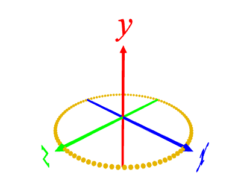
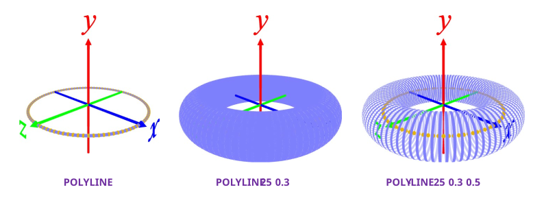
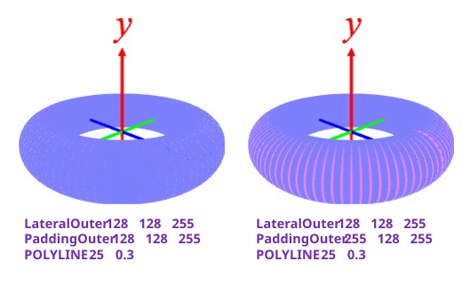
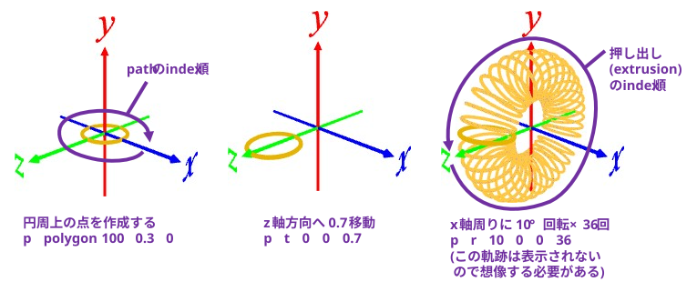
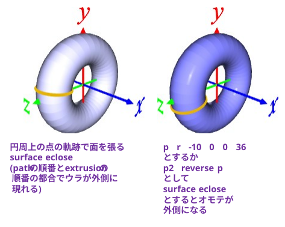
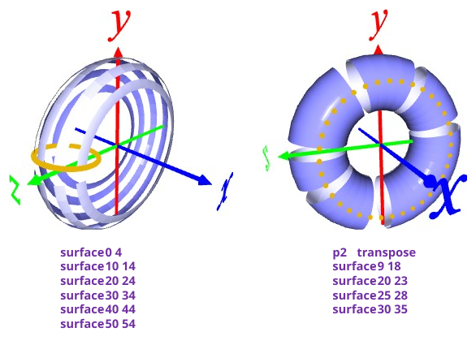

[1] 円周上の座標を取得する
p polygon 100 1 0 # 正 100 角形, 外接円半径 1, 厚さ 0

[2] 軌道に沿ってパイプを並べる
polyline/POLYLINE/ply-line/POLY-LINE
\[
\begin{array}{|l|c|c|}
\hline
& 終点と始点の接続 & パイプのすき間 \\
\hline
\text{polyline} & つながない & うめる (\text{padding} する)\\
\hline
\text{POLYLINE} & つなぐ & うめる (\text{padding} する)\\
\hline
\text{poly-line} & つながない & うめない (\text{padding} しない)\\
\hline
\text{POLY-LINE} & つなぐ & うめない (\text{padding}しない)\\
\hline
\end{array}
\]
パイプの角数、半径、軌道の被覆率をパラメータで指定できる。
POLYLINE (パイプの角数[25]) (パイプの半径[0.02]) (被覆率[1.0])
※ [ ]内はデフォルト値
(例)

パイプの色は LateralOuter と PaddingOuter で指定する。
・padding を目立たせたくない → 同じ色を設定する
・padding を目立たせたい → 異なる色を設定する

[1] 円軌道を作成する
p polygon 100 0.3 0
[2] 円軌道を移動して回転する
p t 0 0 0.7 ･･･ z 軸方向に 0.7 移動
p r 10 0 0 36 ･･･ x 軸周りに 10°回転×36回

[3] 円軌道を回転させた軌跡から面を張る
surface eclose

[4] indexを指定して, 一部のみ面を張ることも可能
p2 transpose コマンドにより, path 次元と extrusion 次元を入れ替えることも可能。
※ transpose を実行するとウラとオモテが入れ替わる。
